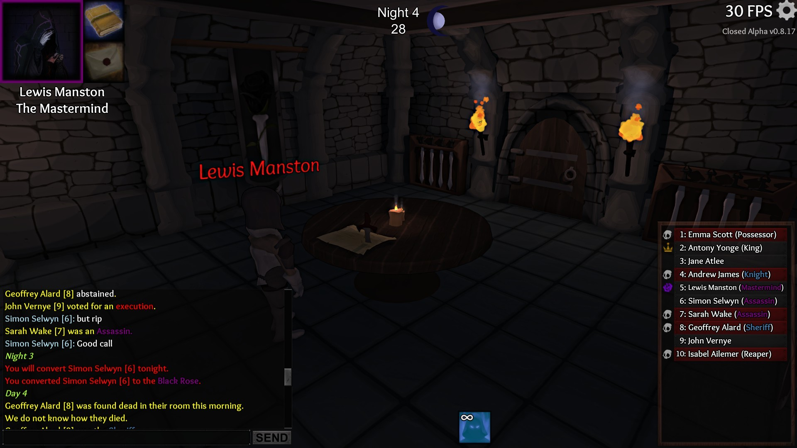
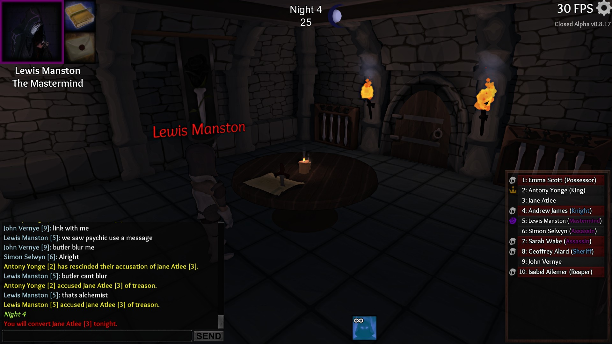

What Happened
I was able to convert 2 consecutive Assassins, two nights in a row.
What SHOULD have happened
The Mastermind’s conversion ability is supposed to go on 1 night cooldown after a successful conversion.
Reproduction
Be Mastermind in Closed Alpha build v0.8.17
Convert a target on night 3 into Assassin
Get the original Assassin jailed for night 4
Convert new target (in this case it was a Butler) into another Assassin on Night 4
Comments:
Ignore what the gamer timer says in the center. See the chat for the results. Notice my successful conversion that occurred on night 3, and notice how I still have the capability to convert (which I successfully did convert) on night 4.

